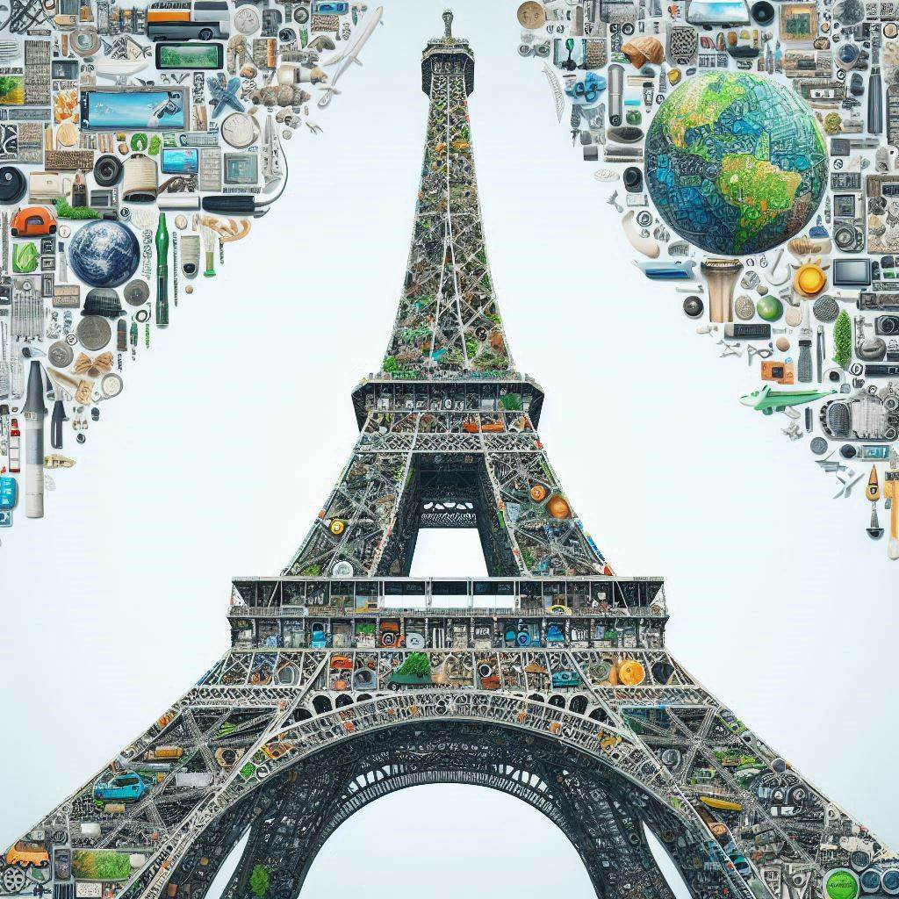
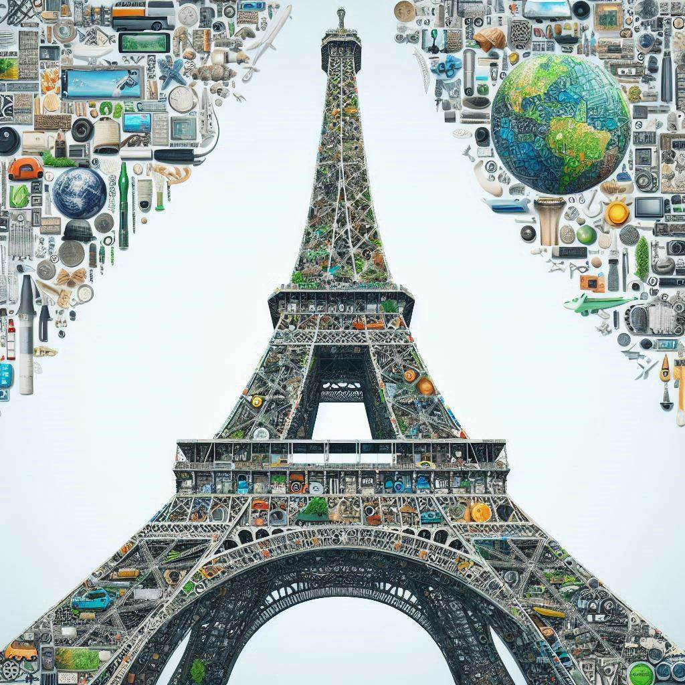
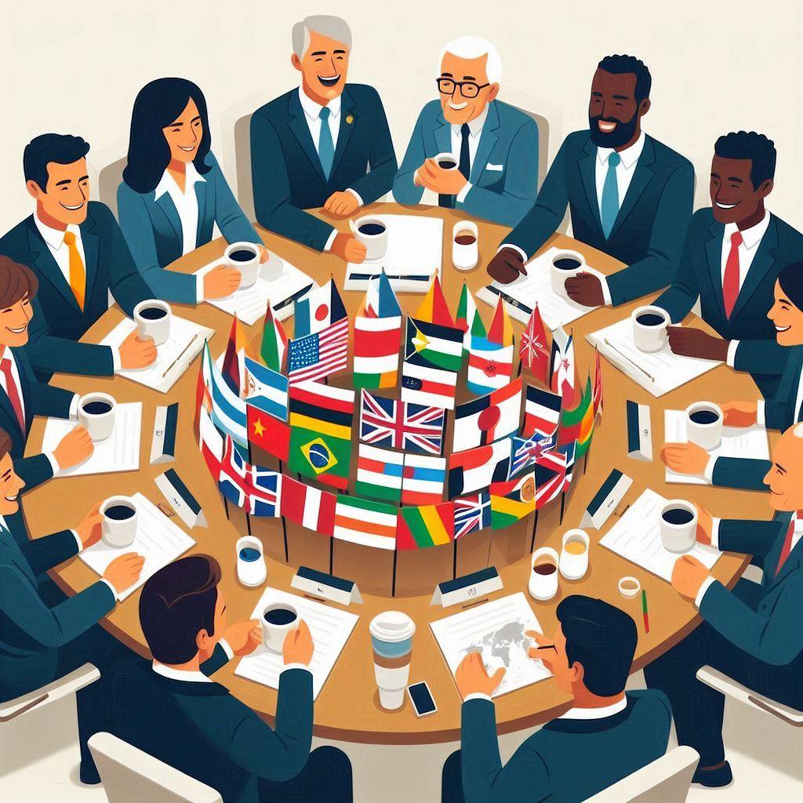
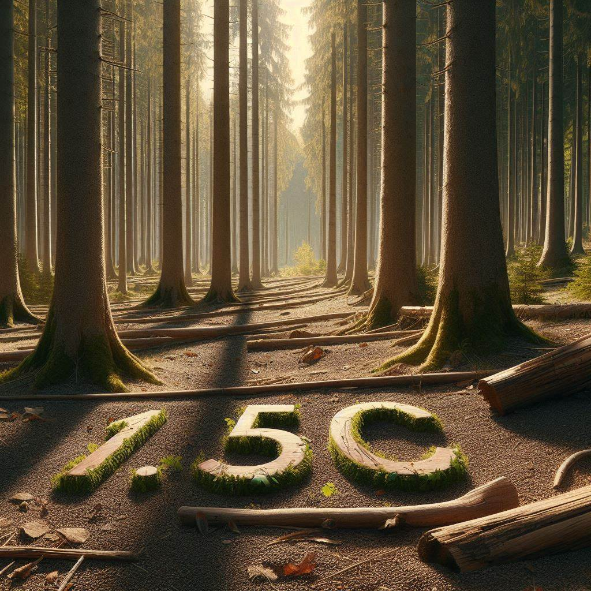

Un rayo de esperanza
Éste ecuerdo, asistido, formado, y firmado, por la mayoria de paises del mundo (193) ha sido la sucesión del protocolo de Kioto. Una propuesta flexible y honesta con objetivos pensados para el largo plazo.
Éste ecuerdo, asistido, formado, y firmado, por la mayoria de paises del mundo (193) ha sido la sucesión del protocolo de Kioto. Una propuesta flexible y honesta con objetivos pensados para el largo plazo.
El Acuerdo de París, asistido, formado y firmado por la mayoría de los países del mundo (193), representa un paso crucial en la lucha contra el cambio climático. Esta iniciativa se considera la sucesión del Protocolo de Kioto, buscando abordar las limitaciones de este último al promover un enfoque más inclusivo y adaptable.
A diferencia de Kioto, que imponía obligaciones rígidas a los países desarrollados, el Acuerdo de París establece metas que son flexibles y permiten a cada nación determinar sus propias contribuciones, conocidas como NDC (Contribuciones Determinadas a Nivel Nacional). Esto no solo reconoce las diferencias en capacidades y circunstancias entre los países, sino que también fomenta un sentido de responsabilidad compartida en la comunidad global.
